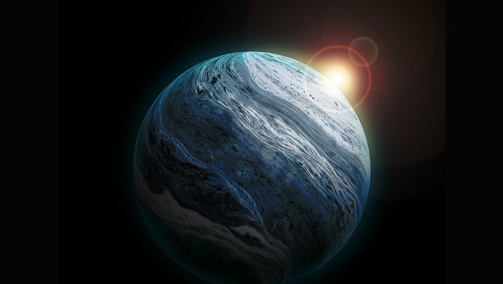
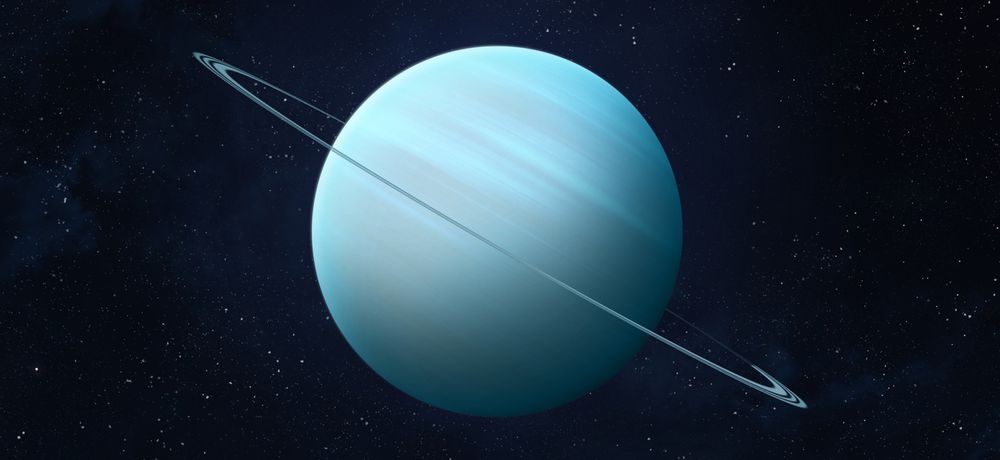

Cuando Urano fue descubierto en el siglo XVIII, se pensó que era un cometa o una estrella. Es el tercer planeta más grande del Sistema solar y el séptimo planeta más cercano al Sol, con una distancia de 2,870’872,200 kilómetros o en términos prácticos, 2.9 miles de millones de kilómetros. Es un planeta gaseoso con una gran cantidad de metano en su superficie, lo que le confiere un tono azulado. Su principal característica es que su eje de rotación está inclinado de forma casi paralela a su plano orbital (unos 8°), por lo que la línea del ecuador está en un ángulo casi recto respecto a su órbita. Además, el Sol recorre el cielo de modo que pasa casi por los polos y así cada hemisferio permanece sin luz solar alrededor de la mitad del año de este planeta. Urano tiene 27 satélites, cuyos nombres pertenecen a varios personajes de las obras de William Shakespeare y de Alexander Pope. Urano tiene 27 satélites, cuyos nombres pertenecen a varios personajes de las obras de William Shakespeare y de Alexander Pope: Cordelia, Ofelia, Desdémona, Julieta, Belinda, Miranda, Ariel, Titania y Oberón, entre otras. Se considera que Miranda es su satélite más extraño, pues su superficie parece indicar una fusión parcial de su interior con material helado que permanece flotando en la superficie. Posee un débil sistema de anillos muy estrechos establecidos en dos conjuntos. Los anillos interiores son más oscuros y estrechos que los exteriores, pues éstos exhiben colores brillantes. El conjunto interno fue descubierto en 1977 por accidente pues los astrónomos sólo esperaban observar el planeta mientras pasaba por delante de la estrella SAO 158687. En 2003, el Telescopio Espacial Hubble descubrió el conjunto externo de anillos. Como es de esperar, debido a la orientación de Urano los anillos son perpendiculares a su órbita alrededor del Sol.
Urano está constituido por un núcleo de roca, un manto helado y una capa exterior gaseosa. Carece de una superficie sólida. El 80 por ciento (puede ser más) de su masa está compuesto de un fluido denso y caliente de materiales de hielo (agua, amoníaco y metano) que está encima del núcleo rocoso. Debido a la similitud de su composición interna con Neptuno, los científicos se refieren a ambos planetas como “los gigantes de hielo”. Su eje magnético está inclinado casi 60° desde su eje de rotación y desplazado del centro del planeta en una tercera parte de su radio.
La atmósfera de este planeta se constituye de hidrógeno en un 83 por ciento, helio en un 15 por ciento y metano en un 2 por ciento. También contiene trazas de agua y amoníaco. Está estructurada en capas de nubes; al parecer, el agua forma las nubes inferiores y el metano forma la capa más superficial de las nubes. Los vientos en Urano alcanzan 900 kilómetros por hora. El metano de esta atmósfera es lo que permite apreciar el color de su superficie. Como la luz solar pasa a través de la atmósfera y se refleja por encima de las nubes, el metano absorbe la parte roja de la luz (solar), por lo que visto desde un telescopio se ve azul verdoso.